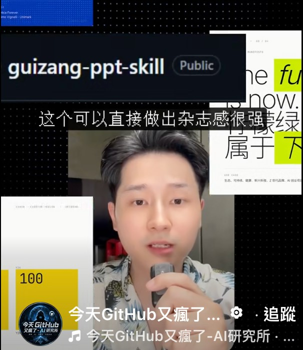
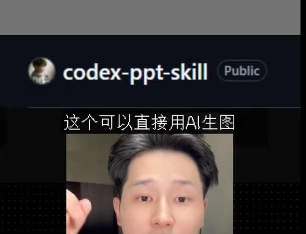
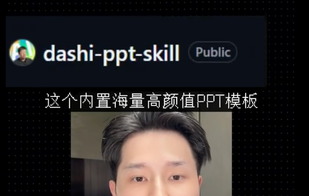
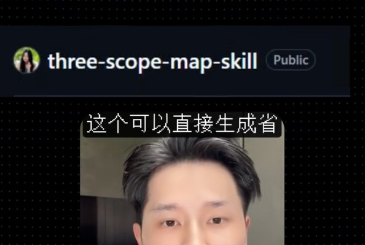
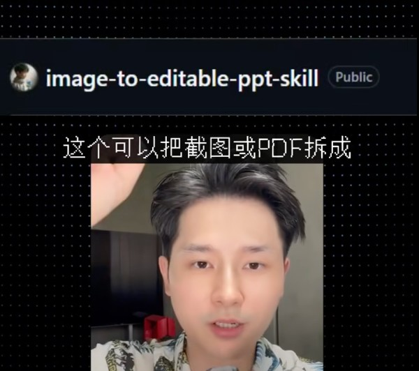
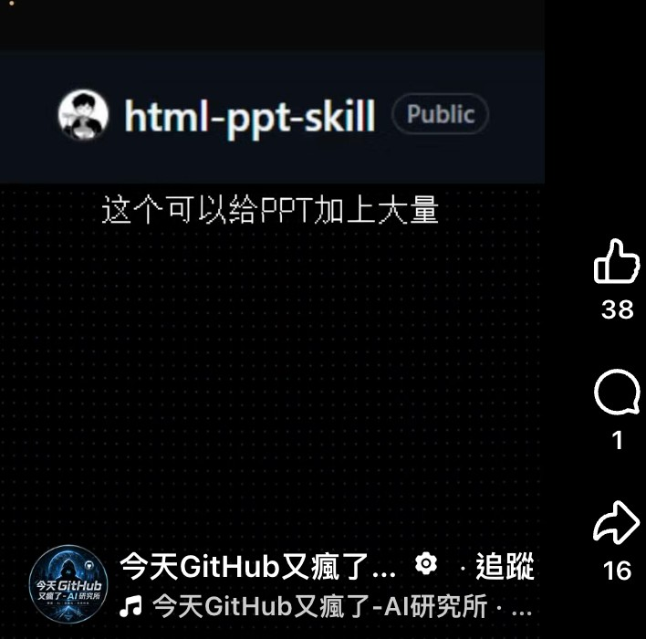

今天GitHub又瘋了 Facebook Reel｜PPT Agent Skills 爆紅清單：從網頁簡報、AI 生圖到截圖/PDF 轉可編輯 PPT

一句話摘要
這支 Facebook Reel 介紹的是一串「簡報生成/改造用 Agent Skills」：讓 Codex、Claude Code、OpenCode 或其他 skill-compatible agent 依照 repo 內的規範與模板產出網頁 PPT、圖片式 PPT、可編輯 PPTX、3D 地圖視覺，甚至把截圖/PDF/圖片版 PPT 逆向重建成可編輯簡報。短影音的「GitHub 又瘋了」屬社群導流 framing；實際可用性仍取決於 agent、模型、素材品質、授權與人工校稿。
截圖可見內容
來源 Facebook Reel 目前無法在未登入狀態完整擷取；以下依欒帥提供的 6 張截圖歸檔：
- 帳號/音訊列：`今天GitHub又瘋了 - AI研究所`。
- 可見互動數字：其中一張截圖顯示讚 38、留言 1、分享 16（擷取當下畫面，會變動）。
- 可見 repo / skill 名稱：`guizang-ppt-skill`、`codex-ppt-skill`、`dashi-ppt-skill`、`three-scope-map-skill`、`image-to-editable-ppt-skill`、`html-ppt-skill`。
- 可見中文字幕片段：
- `guizang-ppt-skill`：這個可以直接做出雜誌感很強…
- `codex-ppt-skill`：這個可以直接用 AI 生圖。
- `dashi-ppt-skill`：這個內置海量高顏值 PPT 模板。
- `three-scope-map-skill`：這個可以直接生成省…
- `image-to-editable-ppt-skill`：這個可以把截圖或 PDF 拆成…
- `html-ppt-skill`：這個可以給 PPT 加上大量…





GitHub 查核清單
- `guizang-ppt-skill`：主要 repo `op7418/guizang-ppt-skill`；授權 AGPL-3.0；擷取時約 22,948 stars。用途是網頁 PPT、配圖、社群封面、雜誌/Swiss 風格簡報 runtime。
- `codex-ppt-skill`：主要 repo `ningzimu/codex-ppt-skill`；授權 MIT；擷取時約 4,410 stars。用途是 GPT-Image-2 / 圖像式簡報產生工作流，支援 Codex 與其他 skills-compatible agents。
- `dashi-ppt-skill`：主要 repo `chuspeeism/dashi-ppt-skill`；授權 AGPL-3.0；擷取時約 4,495 stars。用途是多主題瀏覽器可編輯簡報，可輸出 HTML、PDF、PPTX。
- `three-scope-map-skill`：主要 repo `songsummer920-dazzle/three-scope-map-skill`；授權 GPL-3.0；擷取時約 345 stars。用途是 Three.js 地球/中國/省市區多層級 3D 地圖視覺。
- `image-to-editable-ppt-skill`：主要 repo `ningzimu/image-to-editable-ppt-skill`；授權 MIT；擷取時約 1,739 stars。用途是將截圖、PDF、圖片版 PPTX 拆解並重建成可編輯 PowerPoint。
- `html-ppt-skill`：主要 repo `lewislulu/html-ppt-skill`；授權 MIT；擷取時約 7,556 stars。用途是靜態 HTML/CSS/JS 簡報工作室，含 themes、layouts、animations、presenter mode。
以上 stars/forks 是 2026-08-02 GitHub API 擷取當下數字，會隨時間變動。
可以怎麼用
- 從「可編輯輸出」倒推選工具：要 HTML 展示選 `html-ppt-skill` / `guizang-ppt-skill`；要 PPTX 可編輯輸出看 `dashi-ppt-skill`；要把舊 PDF/截圖救回來則看 `image-to-editable-ppt-skill`。
- 把 repo 當成 agent 的操作規範，而不是只丟一句 prompt。Agent Skills 的價值在於把設計規則、檔案結構、輸出格式、檢查步驟固定下來，讓簡報生成更可重複。
- 課程或商務簡報可用這些工具做初稿，但最終仍應人工確認：文字層級、版權圖片、數據來源、品牌字體、轉檔後版面與動畫相容性。
風險與注意事項
- `AGPL-3.0` / `GPL-3.0` repo 若整合進商業產品、SaaS 或再散布，授權義務與開源要求需先確認；不能只看 demo 很美就直接商用。
- 圖片式 PPT 與 AI 生圖流程可能產生不可編輯元素、文字錯字、幻覺圖表或未授權素材；務必保留來源與人工校對。
- PDF/截圖轉可編輯 PPT 的品質取決於原圖解析度、字體、版面複雜度與 OCR；「可拆成」不等於 100% 還原。
- Agent 有寫檔能力時，建議在 git 分支或副本資料夾操作，避免覆蓋正式簡報。
- 短影音字幕只提供片段；本文不推論影片未顯示的完整說法，以截圖可見內容與官方 GitHub repo 為準。
來源
- Facebook Reel share URL：https://www.facebook.com/share/r/1H9NjxyoEm/
- `op7418/guizang-ppt-skill`：https://github.com/op7418/guizang-ppt-skill
- `ningzimu/codex-ppt-skill`：https://github.com/ningzimu/codex-ppt-skill
- `chuspeeism/dashi-ppt-skill`：https://github.com/chuspeeism/dashi-ppt-skill
- `songsummer920-dazzle/three-scope-map-skill`：https://github.com/songsummer920-dazzle/three-scope-map-skill
- `ningzimu/image-to-editable-ppt-skill`：https://github.com/ningzimu/image-to-editable-ppt-skill
- `lewislulu/html-ppt-skill`：https://github.com/lewislulu/html-ppt-skill